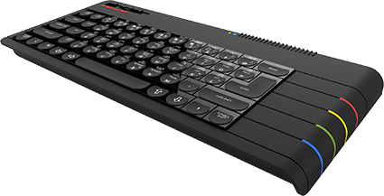

ZX Spectrum Next
The Spectrum Next is an expanded and updated version of the ZX Spectrum, fully compatible (hardware and software) with the original. You can play any games, demos, use original hardware, you name it. It also runs new software created more recently that takes advantage of expanded hardware, including new graphics modes and higher processor speeds.
The Spectrum Next is fully implemented with FPGA technology, ensuring it can be upgraded and enhanced while remaining truly compatible with the original hardware by using special memory chips and clever design. Here’s what under the hood of the machine:
The board supports twin joystick ports, 2048KB RAM, VGA/RGB in addition to digital video output (HDMI compatible). Additionally there are now hundreds of under the hood improvements.
Due to part availability issues relating to the FPGA chip, the new Kickstarter 2 version of the Spectrum Next board features an Artix-7 FPGA in place of the Spartan-6 which featured in the original Kickstarter.